Hello, im here to explain the internals of XS-Leak attacks. i wont give you a high-level overview of the oracle with a payload and call it a day, im here to show you how the leaks work in chromium, line by line.
this all started because a friend asked me: "why is there no explanation of XS-Leak oracles in the chromium source code?" That question stuck in my head for days!. so i learned how chromium works (specific in blink), picked up C++, and took a deep dive into the source code to explain why and how the famous oracles in XS-Leaks actually work under the hood.
if you dont know what XS-Leaks are, here are some resources:
Frame counting leak
frame count leak is count how much is there frames in some page, we can count it even its in cross origin, also frames = (iframe, embed, object) for example:
w = window.open('https://example.com'); // example.com has 2 iframes
w.length // 2ok we know the frame count is count frames in cross origin, but how it works internally
How can we access to another window ?
when we do window.open(), the browser process decides where to run the new page. if its same-site, it stays in the same renderer process and creates a LocalWindowProxy. if its cross-site, site isolation puts in a separate renderer process and creates a RemoteWindowProxy in your process to represent the cross-origin window. this proxy only expose the properties that marked [CrossOrigin] in the IDL, everything else is blocked
i will deep dive in remote window proxy cuz this is our scope:
first we need to know what is the remote window proxy.
remote window proxy is the way to communicate with the another window, for example when we do:
w = window.open('https://example.com');we will open new window and we will set the key of the window w, ok what is the w and is it the really window?, its not w is the Window Proxy that will make us communicate with example.com window.
how is this possible?
well in the third_party/blink/renderer/bindings/core/v8/remote_window_proxy.cc:107-134
void RemoteWindowProxy::CreateContext() {
// Create a new v8::Context with the window object as the global object
// (aka the inner global). Reuse the outer global proxy if it already exists.
v8::Local<v8::ObjectTemplate> global_template =
V8Window::GetWrapperTypeInfo()
->GetV8ClassTemplate(GetIsolate(), *world_)
.As<v8::FunctionTemplate>()
->InstanceTemplate();
CHECK(!global_template.IsEmpty());
v8::Local<v8::Object> global_proxy =
v8::Context::NewRemoteContext(GetIsolate(), global_template,
global_proxy_.Get(GetIsolate()))
.ToLocalChecked();
if (global_proxy_.IsEmpty())
global_proxy_.Reset(GetIsolate(), global_proxy);
else
DCHECK(global_proxy_ == global_proxy);
CHECK(!global_proxy_.IsEmpty());
#if DCHECK_IS_ON()
DidAttachGlobalObject();
#endif
DCHECK(lifecycle_ == Lifecycle::kContextIsUninitialized ||
lifecycle_ == Lifecycle::kGlobalObjectIsDetached);
lifecycle_ = Lifecycle::kContextIsInitialized;
}in this part:
v8::Local<v8::ObjectTemplate> global_template =
V8Window::GetWrapperTypeInfo()
->GetV8ClassTemplate(GetIsolate(), *world_)
.As<v8::FunctionTemplate>()
->InstanceTemplate();this builds the template that define what properties w has.
V8Window::GetWrapperTypeInfo() comes from v8_window.cc (built from the idl) this template includes cross origin properties for the remote dom window, like length.
v8::Local<v8::Object> global_proxy =
v8::Context::NewRemoteContext(GetIsolate(), global_template,
global_proxy_.Get(GetIsolate()))
.ToLocalChecked();this line creates our w. NewRemoteContext is V8 API that creates proxy object using template above. this proxy lives in our process but represents a window in another process, it only has the properties defined in global_template
in the third_party/blink/renderer/bindings/core/v8/remote_window_proxy.cc:136-150
void RemoteWindowProxy::SetupWindowPrototypeChain() {
// Associate the global proxy and its prototype chain with the
// corresponding native DOMWindow object.
DOMWindow* window = GetFrame()->DomWindow();
const WrapperTypeInfo* wrapper_type_info = window->GetWrapperTypeInfo();
// The global proxy object. Note this is not the global object.
v8::Local<v8::Object> global_proxy = global_proxy_.Get(GetIsolate());
// Set a link from both JSGlobalProxy and its hidden prototype (remote
// interceptor object) to the native DOMWindow object.
V8DOMWrapper::SetNativeInfoForGlobal(GetIsolate(), global_proxy, window);
CHECK(global_proxy == window->AssociateWithWrapper(GetIsolate(), world_,
wrapper_type_info,
global_proxy));
}in this part:
DOMWindow* window = GetFrame()->DomWindow();gets the Domwindow C++ object associated with this remote frame
in the third_party/blink/renderer/bindings/core/v8/remote_window_proxy.cc:143-146
v8::Local<v8::Object> global_proxy = global_proxy_.Get(GetIsolate());
// Set a link from both JSGlobalProxy and its hidden prototype (remote
// interceptor object) to the native DOMWindow object.
V8DOMWrapper::SetNativeInfoForGlobal(GetIsolate(), global_proxy, window);link the js proxy object (our w) to the C++ Domwindow object.
So when you call w.length, V8 hits the proxy -> finds the linked DomWindow -> calls DomWindow::length()
CHECK(global_proxy == window->AssociateWithWrapper(GetIsolate(), world_,
wrapper_type_info,
global_proxy));finalizes the 2-way link, now DomWindow knows about the proxy and the proxy knows about DomWindow
so when you call w.length:
w -> global_proxy (created by NewRemoteContext)
.length -> V8 checks global_template -> "length" is allowed
-> finds linked DOMWindow via SetNativeInfoForGlobal
-> calls DOMWindow::length()
-> GetFrame()->Tree().ScopedChildCount()
-> returns 3How it count ?
so we now know how window refernced and how it works, now ill explain how chromium counts the frames inside window
in third_party/blink/renderer/core/frame/dom_window.cc:310-314
unsigned DOMWindow::length() const {
RecordWindowProxyAccessMetrics(
mojom::blink::WindowProxyAccessType::kLength);
return GetFrame() ? GetFrame()->Tree().ScopedChildCount() : 0;
}this is the .length function, in this line return GetFrame() ? GetFrame()->Tree().ScopedChildCount() : 0; the GetFrame() is function that checks if the frame is exist and not null, the comment below explain everything
third_party/blink/renderer/core/frame/dom_window.h:62-76
Frame* GetFrame() const {
// A Frame is typically reused for navigations. If |frame_| is not null,
// two conditions must always be true:
// - |frame_->domWindow()| must point back to this DOMWindow. If it does
// not, it is easy to introduce a bug where script execution uses the
// wrong DOMWindow (which may be cross-origin).
// - |frame_| must be attached, i.e. |frame_->page()| must not be null.
// If |frame_->page()| is null, this indicates a bug where the frame was
// detached but |frame_| was not set to null. This bug can lead to
// issues where executing script incorrectly schedules work on a detached
// frame.
SECURITY_DCHECK(!frame_ ||
(frame_->DomWindow() == this && frame_->GetPage()));
return frame_.Get();
}ok lets back to length() function, its check if the frame exist and if its exist it will get FrameTree by calling Tree(), Tree() function return parent/child relationships between frames
after that it will call ScopedChildCount() function:
third_party/blink/renderer/core/page/frame_tree.cc:164-176
unsigned FrameTree::ScopedChildCount() const {
if (scoped_child_count_ == kInvalidChildCount) {
unsigned scoped_count = 0;
for (Frame* child = FirstChild(); child;
child = child->Tree().NextSibling()) {
if (child->Client()->InShadowTree())
continue;
scoped_count++;
}
scoped_child_count_ = scoped_count;
}
return scoped_child_count_;
}this function the core of the count, first scoped_child_count_ == kInvalidChildCount it checks if the count didnt cached because:
third_party/blink/renderer/core/page/frame_tree.cc:43
const unsigned kInvalidChildCount = ~0U;and
third_party/blink/renderer/core/page/frame_tree.cc:47-48
FrameTree::FrameTree(Frame* this_frame)
: this_frame_(this_frame), scoped_child_count_(kInvalidChildCount) {}they make a special number that checks if the frames cached or not
the special number is bitwise NOT of unsigned zero=4294967295 and they set the number in kInvalidChildCount and scoped_child_count_.
if the scoped_child_count_ and kInvalidChildCount = 4294967295 thats means they didnt counted yet so it will the for loop inside the if condition.
for (Frame* child = FirstChild(); child;
child = child->Tree().NextSibling()) {
if (child->Client()->InShadowTree())
continue;
scoped_count++;
}in the for loop it linked list traversal. start with the first child frame until child is null, and each iteration move to next sibling
if (child->Client()->InShadowTree())
continue;if the frame lives inside Shadow dom skip it and dont count it.
ok now we know how the frames are count, but why they are can used even in cross origin ?.
The key of the Frame counting
first we need to know what is Web IDL
Web IDL, that can be used to describe interfaces that are intended to be implemented in web browsers. Web IDL is an IDL variant with a number of features that allow the behavior of common script objects in the web platform to be specified more readily. How interfaces described with Web IDL correspond to constructs within JavaScript execution environments
if you need know more about Web IDL:
https://www.chromium.org/developers/web-idl-interfaces/#web-idl
https://webidl.spec.whatwg.org/
ok now we know what is Web IDL
third_party/blink/renderer/core/frame/window.idl:62
[Replaceable, CrossOrigin, Measure] readonly attribute unsigned long length;as we can see the length attribute inside window set as CrossOrigin
so we can access the .length for CrossOrigin site, and THIS IS THE KEY OF THE WHOLE LEAK!
Mitigations
to mitigate this type of oracles, you can use
- COOP (
Cross-Origin-Opener-Policy: same-origin), severs the window.open() reference, the proxy becomes useless - use Shadow Dom, as i mentioned it before if the frame is in shadow dom the chromium wont count it
Visual Overview
if you dont get it, i made a graph that explain everything

See you in part 2 :)